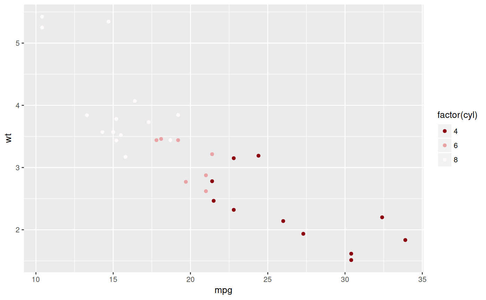
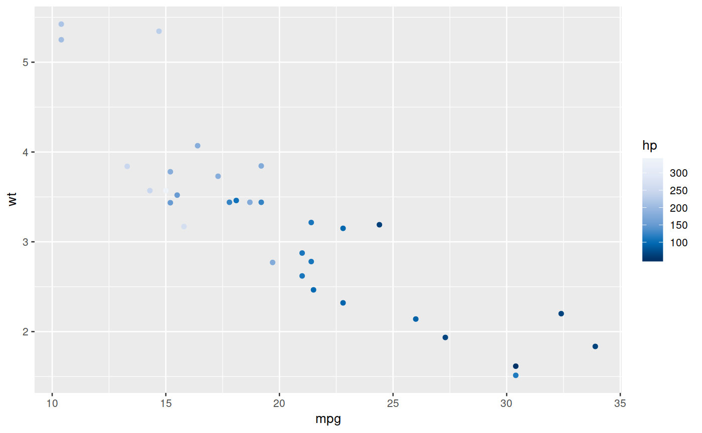
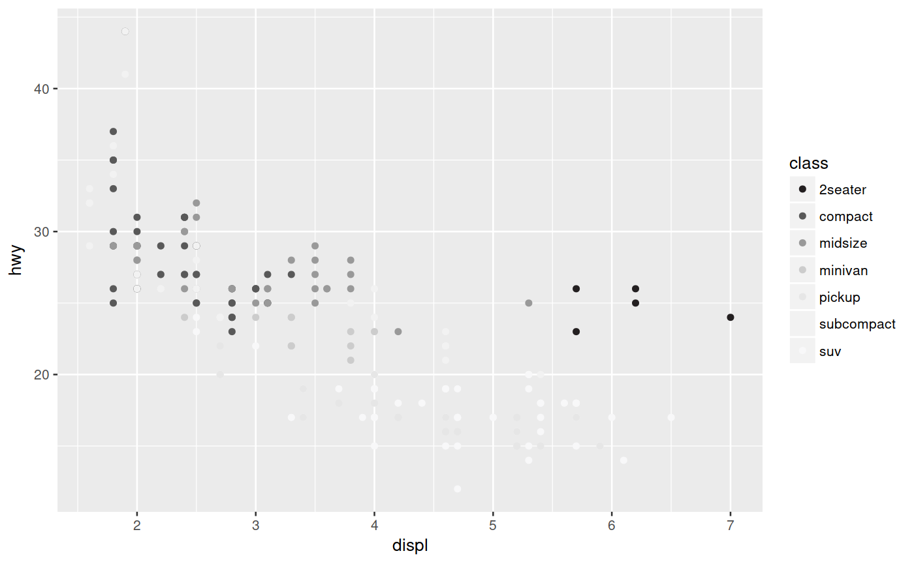
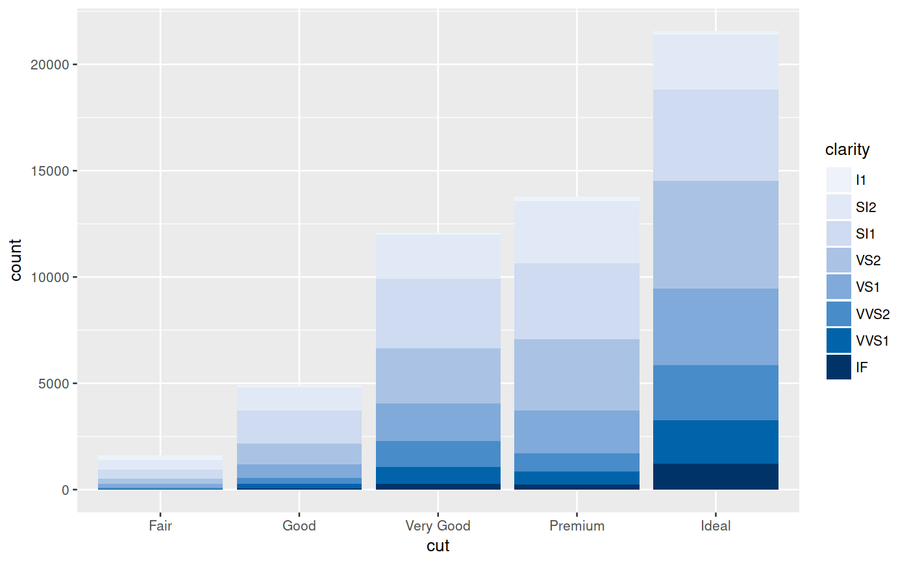

Setup colour palette for ggplot2
scale_color_ocha(..., palette = "blue", discrete = TRUE, alpha = 1, reverse = FALSE) scale_colour_ocha(..., palette = "blue", discrete = TRUE, alpha = 1, reverse = FALSE)
| ... | additional arguments to pass to scale_color_gradientn |
|---|---|
| palette | Choose from 'ocha_palettes' list |
| discrete | whether to use a discrete colour palette |
| alpha | transparency |
| reverse | logical, Reverse the order of the colours? |
library(ggplot2) ggplot(mtcars, aes(mpg, wt)) + geom_point(aes(colour = factor(cyl))) + scale_colour_ocha(palette = "red")ggplot(mtcars, aes(mpg, wt)) + geom_point(aes(colour = hp)) + scale_colour_ocha(palette = "blue", discrete = FALSE)ggplot(data = mpg) + geom_point(mapping = aes(x = displ, y = hwy, color = class)) + scale_colour_ocha(palette = "gray")